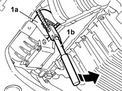
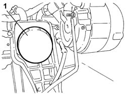

1084B30 CARTRIDGE ENGINE OIL FILTER -R.R.
- Path
- Procedures > 10 ENGINE > 1084 ENGINE LUBRICATION > 1084B ENGINE OIL LUBRICATION CIRCUIT > 1084B30 CARTRIDGE ENGINE OIL FILTER -R.R.
- Kind
- repair procedure (removal / refitting; the operation number is the code)
- Applies to
- engines: 2.0 TB, 2.4 20V, 3.0 V6, 3.2 V6; all production periods
- Interactive page
- https://sloeber94.github.io/elrnDB-lThss/en/#/75248
Applies to: engines: 2.0 TB, 2.4 20V; all production periods
 Removing
Removing
 Refitting
Refitting- Position the vehicle on a lift.
See in Op. 7055B54 PROTECTION/GUARD under engine - R.R.
1. Remove the engine oil filter (1a) using a suitable tool (1b).

Applies to: engines: 2.0 TB, 2.4 20V; all production periods
Refitting
Removing- Lubricate the new filter gasket with engine oil.
- Fit the engine oil cartridge filter, complete with gasket, and tighten it fully, by hand.
See in Op. 0010T11 ENGINE OIL - Check level and top up if necessary
- [0010T11]
Applies to: engines: 3.0 V6, 3.2 V6; all production periods
Removing
Refitting- Position the vehicle on a lift.
See in Op. 4450B04 Right FRONT WHEEL (one) - R.R.
See in Op. 7055B54 PROTECTION/GUARD under engine - R.R.
1. Remove the engine oil filter using a suitable tool.

Applies to: engines: 3.0 V6, 3.2 V6; all production periods
Refitting
Removing- Lubricate the new filter gasket with engine oil.
- Fit the engine oil cartridge filter, complete with gasket, and tighten it fully, by hand.
See in Op. 7055B54 PROTECTION/GUARD under engine - R.R.
See in Op. 4450B04 Right FRONT WHEEL (one) - R.R.
- [0010T11]
- Remove the vehicle from the lift.
Topics linked from this page (3)
- 0010T11 ENGINE OIL - Check level and top up if necessary
- 4450B04 Right FRONT WHEEL (one) - R.R.
- 7055B54 PROTECTION/GUARD under engine - R.R.
Topics that link to this page (16)
- 0010T12 ENGINE OIL AND FILTER - REPLACE
- 1008A44 RIGID REAR power unit MOUNTING - R.R.
- 1020A20 CRANKCASE SUMP - R.R. clean contact surfaces and apply sealant
- 1020D08 FRONT crankshaft oil seal COVER - R.R. and replace seals with timing belt(s) removed for versions with automatic transmission
- 1020D12 Crankshaft oil seal FRONT COVER - R.R. and Replace seals
- 1056B90 SYSTEM CABLE LOOM - R.R.
- 1080B39 RIGHT CATALYTIC PRECONVERTER - R.R. or Replace Gasket
- 1084C10 Engine oil heat exchanger - R.R.
- 1088D47 COOLANT SUPPLY AND RETURN HOSES TO ENGINE OIL HEAT EXCHANGER - R.R.
- 1088D63 Alternator side flexible hose for alternator coolant return pipe - R.R.
- 1088D68 Connectors on coolant circuit alternator - R.R. or replace gasket
- 5520B10 STARTER MOTOR - R&R
- 5530A10 ALTERNATOR - R.R.
- 5530A40 Alternator BRACKETS/MOUNT/SPACER - R&R
- 5530B34 LEAD between junction unit terminal and starter motor - R.R.
- 5530B36 LEAD between starter motor and alternator - R.R.